Gestione Operazioni
Operatore di CapitanerieUna panoramica dei flussi relativi alla gestione delle operazioni, per orientarti passo dopo passo.
01.
Inserimento operazioni
Panoramica sull'inserimento di una nuova operazione.
Punto di accesso
La voce di menù
Dalla dashboard è possibile accedere alle principali sezioni tramite le voci di menu.
Menu a tendina
Cliccando sulla voce "Gestione e Consultazione" viene visualizzato un menu a tendina, nella sezione "Gestione soste", è possibile inserire nuove operazioni accedendo alla voci:
- "Soste"
- Risultati di ricerca soste
- Dettaglio soste
- "Gestione Operazioni".
Nella sezione Attività da svolgere, nella voce "Lista soste" sarà presente l'elenco delle soste dal quale è possibile inserire le operazioni cliccando il pulsante "+".
Inserimento operazioni
Punto di Accesso dell'inserimento delle operazioni
Attivazione dell'"Inserimento" dall'elenco risultati soste
Nell'elenco risultati della ricerca delle soste è possibile inserire un'operazione cliccando sull'icona "+".
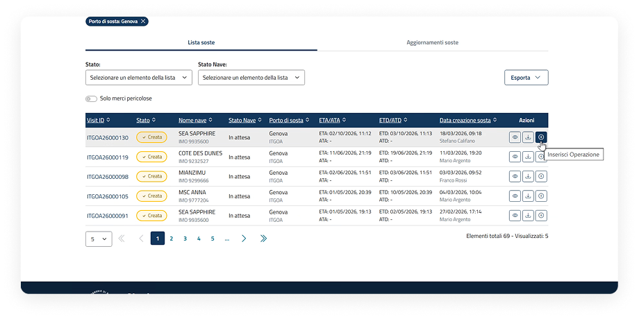
Attivazione dell'"Inserimento" da pagina di dettaglio sosta
Nell'elenco risultati delle soste è possibile accedere al dettaglio in modalità visualizzazione cliccando sull'"icona dell'occhio". All'interno del dettaglio per procedere con l'inserimento è necessario cliccare sul pulsante "Inserisci operazione".
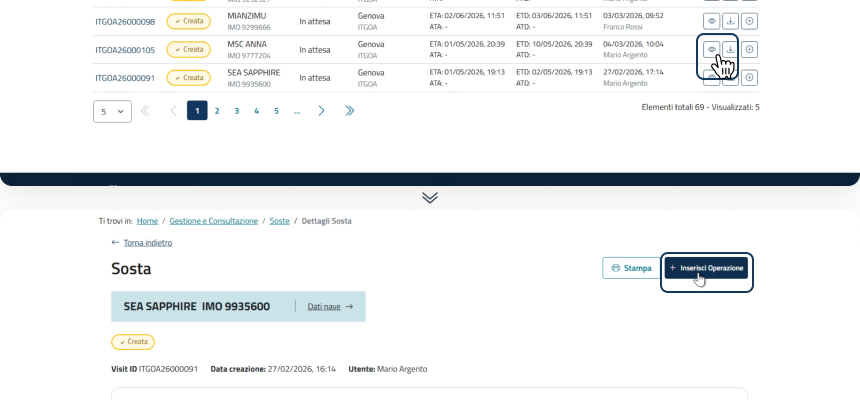
Inserimento operazioni
Visualizzazione dettaglio operazioni
All'interno della pagina sono consultabili le seguenti informazioni:
- Nave selezionata (link dettaglio anagrafica nave)
- Informazioni sosta
- Elenco operazioni disponibili:
- Operazioni di ancoraggio
- Operazioni di ormeggio
- Operazioni di movimento
- Operazioni di partenza
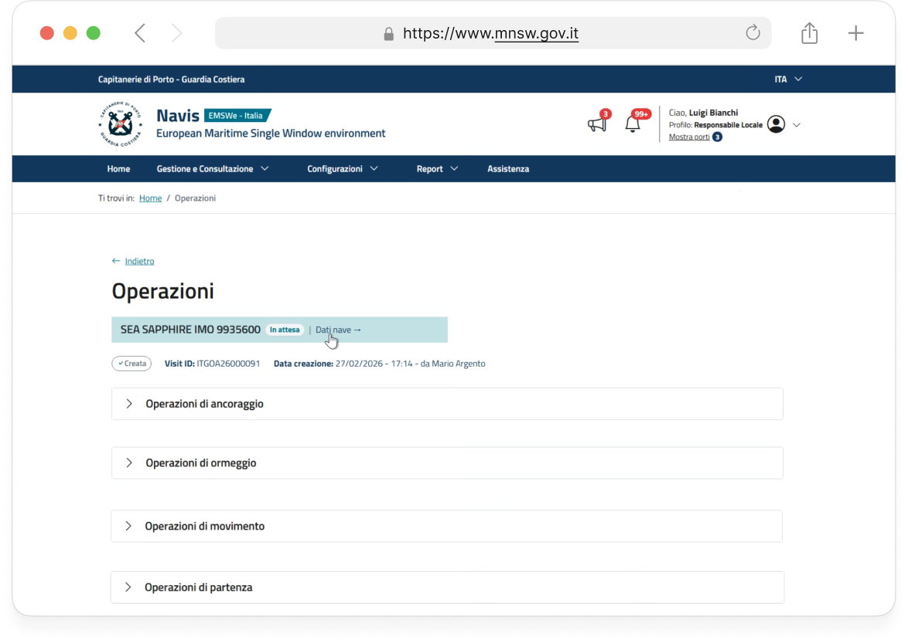
Inserimento operazioni
Passaggi per l'inserimento delle "operazioni di ancoraggio"
L'utente può aggiungere le operazioni di ancoraggio attraverso i seguenti passaggi:
Pulsante di nuova operazione
All'interno dell'accordion "Operazioni di ancoraggio", cliccare il pulsante "Nuova operazione".
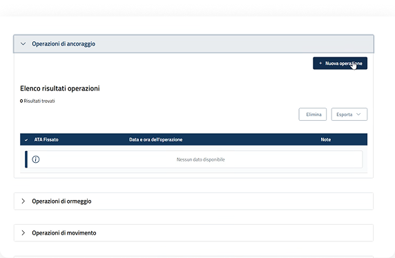
Dati ancoraggio e coordinate geografiche
Inserire le informazioni richieste relative all'ancoraggio, in funzione dell'operazione prevista per la sosta corrente.
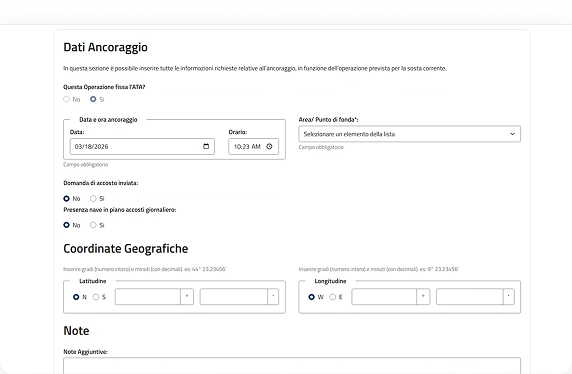
Inserimento informazioni
Selezionare tramite il menu a tendina l'area/punto di fonda. Indicare se è stata inviata la domanda di accosto e se la nave risulta presente nel piano accosti giornaliero.
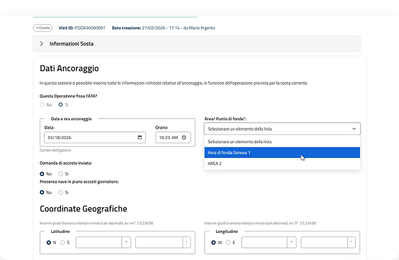
Coordinate geografiche e salvataggio
Successivamente all'inserimento delle coordinate geografiche (gradi e minuti) ed eventuali note, salvare l'operazione attraverso il pulsante "Salva operazione". Il sistema mostra una finestra di conferma dell'inserimento. Cliccare il pulsante "Conferma" per inserire l'operazione.
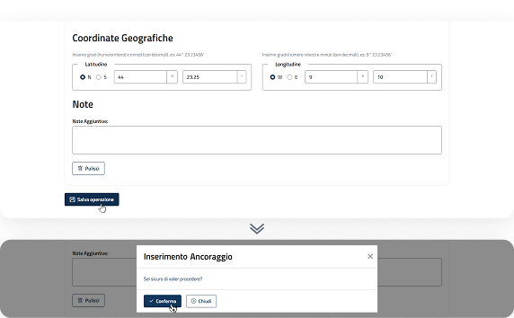
Finestra informativa
Il sistema mostra una finestra informativa nel caso in cui vengono riscontrate incongruenze nei dati inseriti.
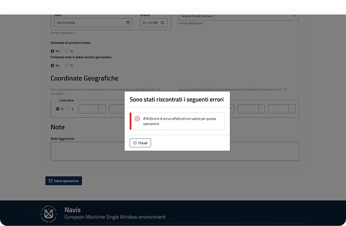
Aggiunta e azioni disponibili
Una volta aggiunta l'operazione, sarà visibile tramite vista tabellare. Sarà possibile esportare l'elenco delle operazioni presenti, e selezionando una o più operazioni, eliminarle.
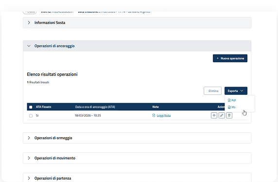
Dopo il salvataggio di un'operazione di Ancoraggio, se quest'ultima fissa l'ATA, la nave assume lo stato "Arrivata in Rada", altrimenti fissa lo stato in "In attesa in Rada".
Inserimento operazioni
Passaggi per l'inserimento delle "operazioni di ormeggio"
L'utente può aggiungere le operazioni di ormeggio attraverso i seguenti passaggi, solo nel caso in cui l'operazione di Ancoraggio non abbia fissato l'ATA:
Pulsante di nuova operazione
All'interno dell'accordion "Operazioni di ormeggio", cliccare il pulsante "Nuova operazione".
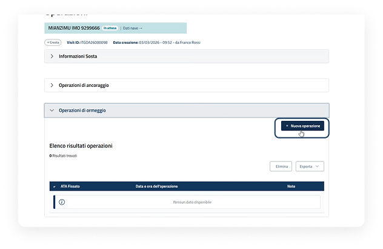
Informazioni richieste relative all'ormeggio
Inserire le informazioni richieste relative all'ormeggio, in funzione dell'operazione prevista per la sosta corrente.
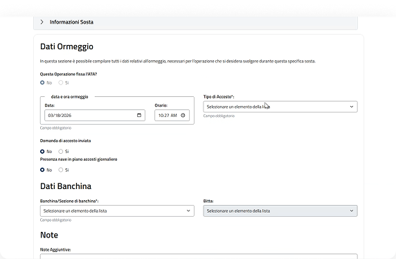
Inserimento dati ormeggio
Selezionare tramite il menu a tendina la tipologia di Accosto. Indicare se è stata inviata la domanda di accosto e la presenza nave in piano accosti giornaliero.
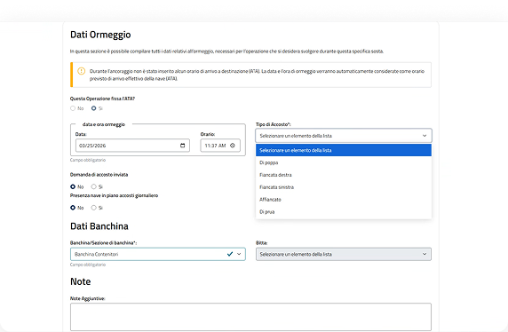
Inserimento dati banchina
Inserire i dati banchina, come "Banchina/Sezione di banchina" e "Bitta" ed eventuali note. Successivamente salvare l'operazione cliccando il pulsante "Salva operazione".
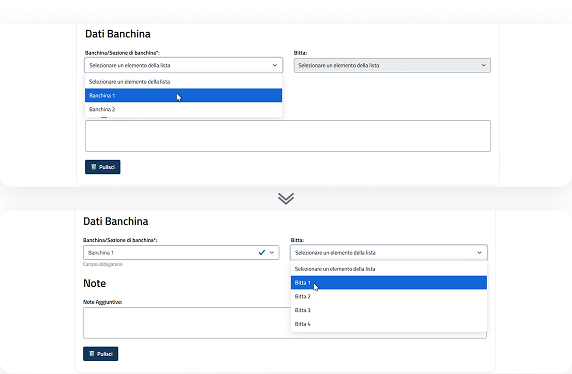
Finestra di conferma
Il sistema mostra una finestra di conferma dell'inserimento. Cliccare il pulsante "Conferma" per inserire l'operazione.
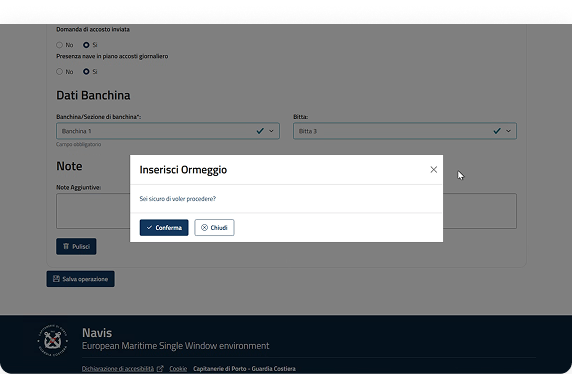
Aggiunta e azioni disponibili
Una volta aggiunta l'operazione, sarà visibile tramite tabella. Sarà possibile esportare, e selezionando una o più operazioni, eliminarle.
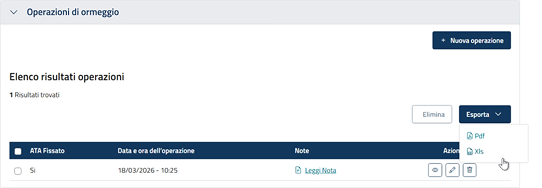
Dopo il salvataggio di un'operazione di Ormeggio, se quest'ultima fissa l'ATA, la nave assume lo stato "Arrivata in Banchina".
Inserimento operazioni
Passaggi per l'inserimento delle "operazioni di movimento"
L'utente può aggiungere le operazioni di movimento attraverso i seguenti passaggi:
Pulsante di nuova operazione
All'interno dell'accordion "Operazioni di movimento", cliccare il pulsante "Nuova operazione".
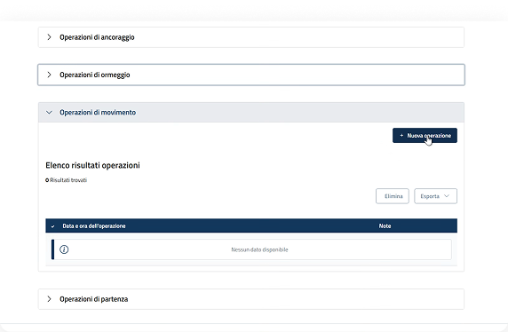
Dati relativi all'operazione di movimento
Inserire le informazioni richieste relative al movimento, come "Struttura di arrivo" e "Data e ora movimento". La struttura di partenza è pre-popolata con la struttura portuale indicata nell'operazione cronologicamente precedente.
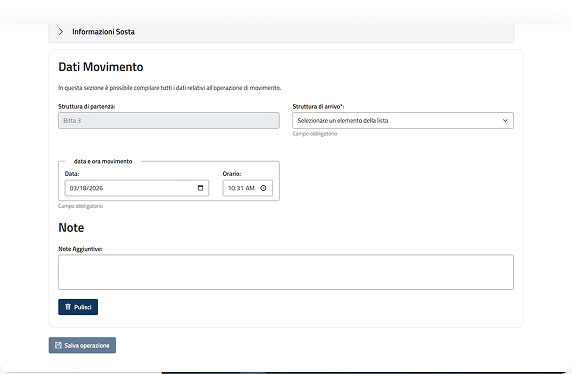
Inserimento informazioni (selezione porto)
Se viene selezionata come struttura di arrivo la tipologia un porto, il sistema dà la possibilità di indicare la banchina tramite la lista.
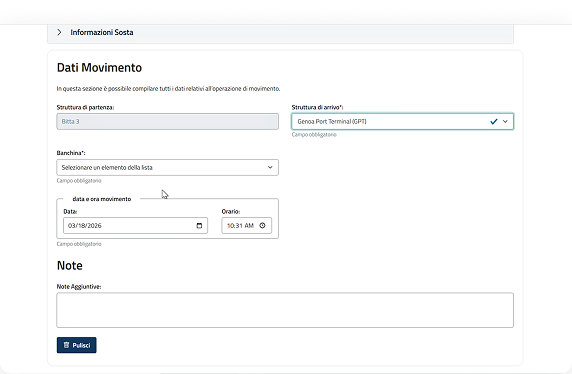
Inserimento informazioni (selezione bitta)
Se viene selezionata come struttura di arrivo la tipologia "Bitta", dovranno essere aggiunti data e ora di movimento. È possibile inserire eventuali note.
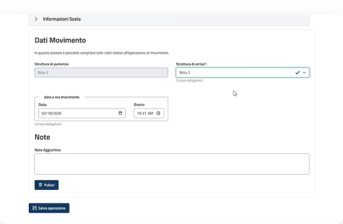
Finestra di conferma
Il sistema mostra una finestra di conferma dell'inserimento del movimento. Cliccare il pulsante "Conferma" per inserire l'operazione.
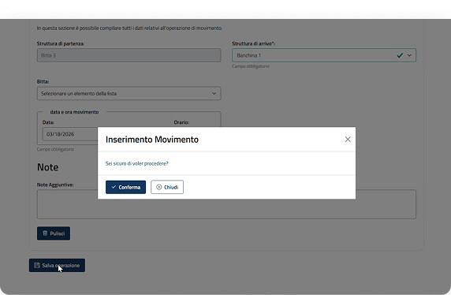
Aggiunta e azioni disponibili
Una volta aggiunta l'operazione, sarà visibile tramite tabella. Sarà possibile esportare, e selezionando una o più operazioni, eliminarle.
Dopo il salvataggio di un operazione di Movimento, la nave assume lo stato "Arrivata in Rada" se la tipologia di struttura di destinazione è area o punto di fonda, o "Arrivata in banchina" se la tipologia di struttura è banchina.
Inserimento operazioni
Passaggi per l'inserimento delle "operazioni di partenza"
L'utente può aggiungere le operazioni di partenza attraverso i seguenti passaggi:
Pulsante di nuova operazione
All'interno dell'accordion "Operazioni di partenza", cliccare il pulsante "Nuova operazione".
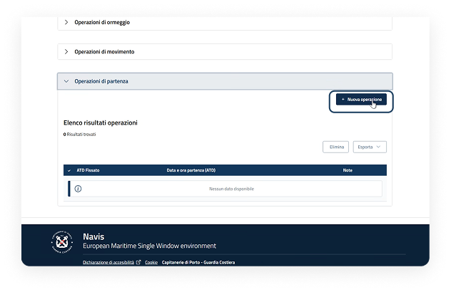
Dati relativi all'operazione di partenza
Inserire le informazioni richieste relative alla partenza. Indicare se l'operazione fissa l'ATD e data e ora di partenza.
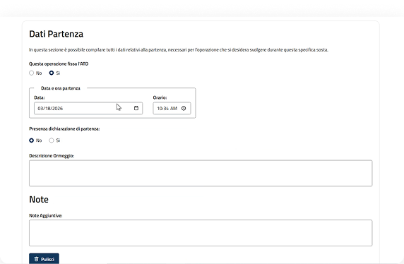
Presenza dichiarazione di partenza
Indicare se è presente la dichiarazione di partenza dell'operazione.
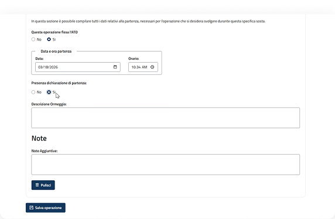
Aggiunta descrizione ormeggio
Aggiungere nelle apposite sezioni una descrizione relativa all'ormeggio dell'operazione e possibili Note Aggiuntive.
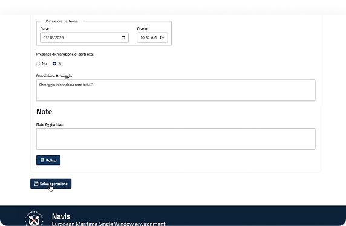
Finestra di conferma
Il sistema mostra una finestra di conferma dell'inserimento del movimento. Cliccare il pulsante "Conferma" per inserire l'operazione.
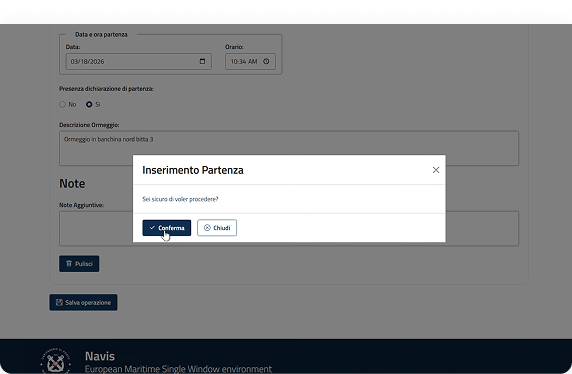
Aggiunta e azioni disponibili
Una volta aggiunta l'operazione, sarà visibile tramite tabella. Sarà possibile esportare, e selezionando una o più operazioni, eliminarle.
Dopo il salvataggio di un operazione di partenza, la nave assume lo stato "Partita" e la sosta assume lo stato "Chiusa".
Inserimento operazioni
Possibili azioni sulla tabella
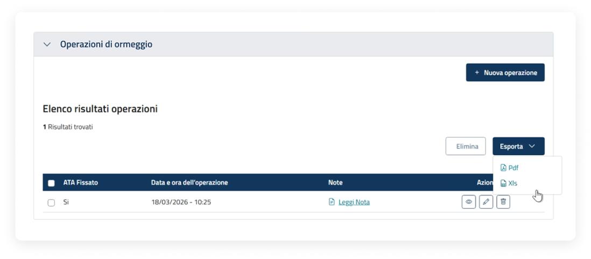
L'utente può continuare ad aggiungere operazioni.
L'utente può eliminare una o più operazioni dopo averle selezionate tramite checkbox. Inoltre ha la possibilità di esportare le operazioni in formato PDF o XLS.
Le azioni presenti per ogni operazione sono:
Visualizzazione dettaglio
Modifica operazione
Cancella operazione
Inserimento operazioni
Obblighi di Dichiarazione non presenti
Per operazione di "Ancoraggio" e "Ormeggio"
Il sistema mostra una finestra informativa nel caso in cui risultino mancanti determinati Obblighi di Dichiarazione. Cliccare il pulsante "Conferma" per proseguire.
Per operazione di "Partenza"
Il sistema mostra una finestra informativa nel caso in cui risultino mancanti determinati Obblighi di Dichiarazione o si stia effettuando un'operazione di partenza con una nave in stato "In attesa" o "In attesa in Rada". Cliccare il pulsante "Conferma" per proseguire.
Inserimento operazioni
Regole per inserimento Operazioni
- Nel caso di operazione di ancoraggio che fissa l'ATA non è possibile effettuare operazioni di ormeggio ma solo di movimento e partenza;
- Nel caso di operazione di ancoraggio che non fissa l'ATA è possibile procedere con altre operazioni di ancoraggio e con l'operazione di ormeggio che fissa l'ATA;
- È possibile inserire un'operazione di "Partenza" anche in assenza di operazioni di "Ancoraggio" ed "Ormeggio";
- Non è possibile inserire operazioni di "Ancoraggio", "Ormeggio" e "Movimento" in presenza di una operazione di "Partenza";
- Con operazioni che fissano l'ATA, non sarà più possibile sottomettere gli Obblighi di Dichiarazione previsti nella prenotifica, ovvero ISPS, prenotifica rifiuti (potrà essere gestita solo come istanza mantenimento a bordo), Prenotifica 72 h, D.lvo 38/20 in arrivo;
- Con l'operazione di partenza che fissa l'ATD non sarà più possibile sottomettere gli Obblighi di Dichiarazione ad eccezione del POB details in partenza (fino a 15 minuti dopo ATD);
- Il sistema segnala con opportuno messaggio che l'utente sta creando un'operazione di "Partenza", in presenza di stato della nave "in attesa" (sosta creata con un ETA) o "in attesa in rada" (ancoraggio in rada).
02.
Ricerca e consultazione operazioni
Panoramica sulla ricerca e sulla consultazione delle operazioni.
Punto di accesso
La voce di menù
Dalla dashboard è possibile accedere alle principali sezioni tramite le voci di menu.
Menu a tendina
Cliccando sulla voce "Gestione e Consultazione" viene visualizzato un menu a tendina, nella sezione "Gestione Soste", è possibile accedere alla voce "Gestione Operazioni".
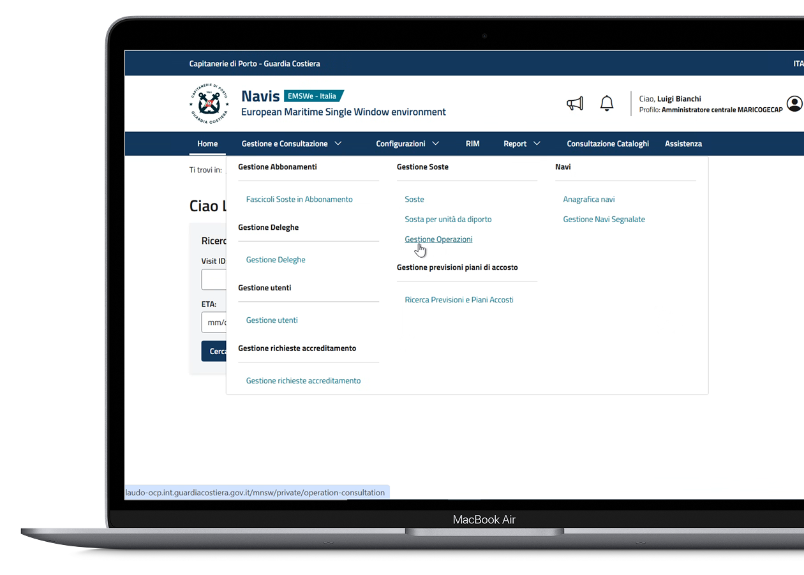
Ricerca e consultazione operazioni
Funzionalità in pagina
È possibile avviare subito la ricerca oppure aggiungere ulteriori filtri per rendere i risultati più precisi. La schermata è suddivisa nelle seguenti tre sezioni:
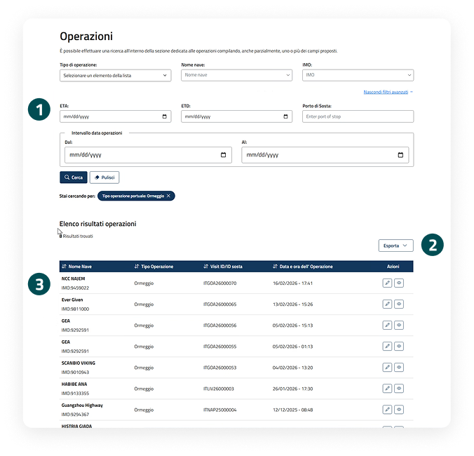
Sezione filtri
La sezione Filtri consente di ricercare le operazioni secondo diversi criteri. Sono disponibili filtri base, come Tipo di operazione, Nome nave e IMO, e filtri avanzati per affinare la ricerca per ETA, ETD, Porto di Sosta e intervallo data delle operazioni.
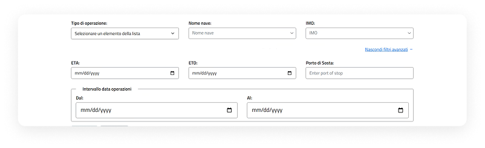
Azioni sulla tabella dei risultati
È possibile esportare i risultati di ricerca attraverso il pulsante "Esporta".
Visualizzazione operazione tramite tabella
I risultati della ricerca vengono presentati in una tabella, mostrando le informazioni principali e le azioni disponibili.
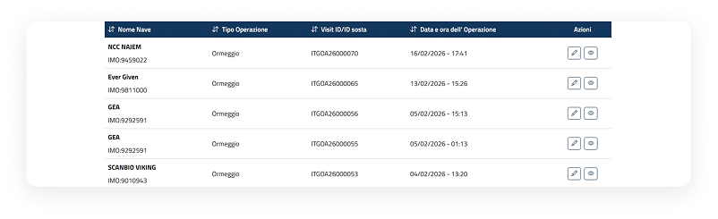
Ricerca e consultazione operazioni
Visualizzazione dettaglio
All'interno della pagina sono consultabili le seguenti informazioni:
- Informazioni sosta
- Dettaglio operazioni aggiunte
- Dati banchina
- Note aggiuntive
Possibili azioni sulle operazione:
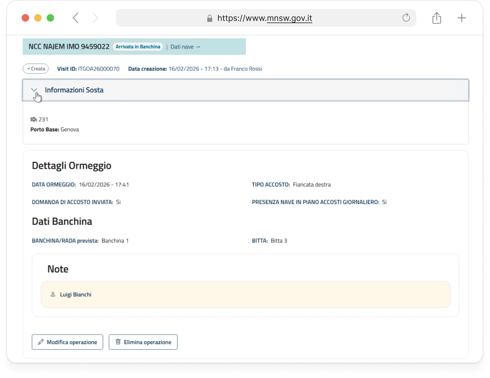
03.
Modifica operazioni
Panoramica sulla modifica di un'operazione esistente.
Punto di Accesso alla modifica delle operazioni
Attivazione della "Modifica" dall'elenco risultati delle operazioni
Nell'elenco risultati delle operazioni è possibile accedere al dettaglio in modalità modifica cliccando sull'"icona della matita".
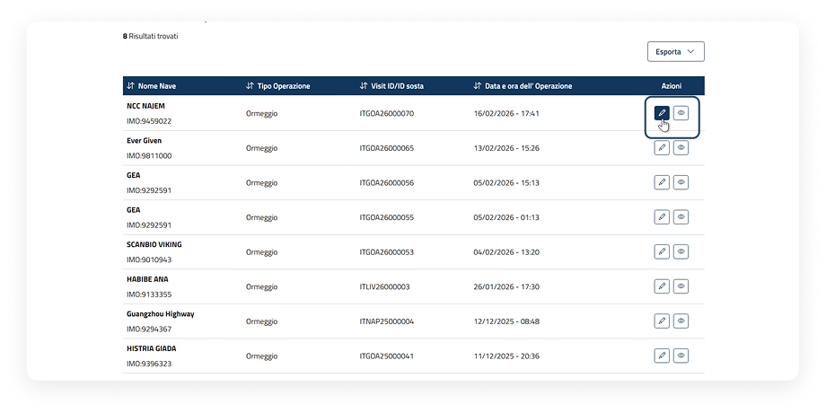
Attivazione della "modifica" da pagina di dettaglio dell'operazione
Nell'elenco risultati delle operazioni è possibile accedere al dettaglio in modalità visualizzazione cliccando sull'"icona dell'occhio". All'interno del dettaglio per procedere con la modifica è necessario cliccare sul pulsante "Modifica operazione".
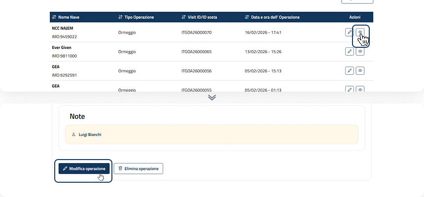
Modifica operazioni
Passaggi per modificare un'operazione
Dopo aver creato un operazione, l'utente può modificarla tramite i seguenti passaggi:
Modifica dei dati
È possibile aggiornare i dati presenti in relazione alla tipologia di operazione che si sta modificando.
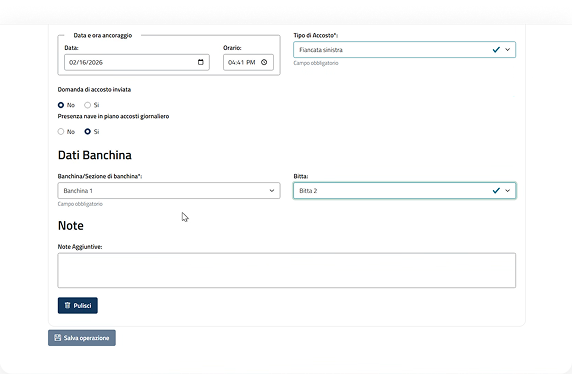
Salvataggio operazione
Dopo aver modificato i dati precedentemente inseriti, cliccare su "Salva operazione" per salvare la modifica.
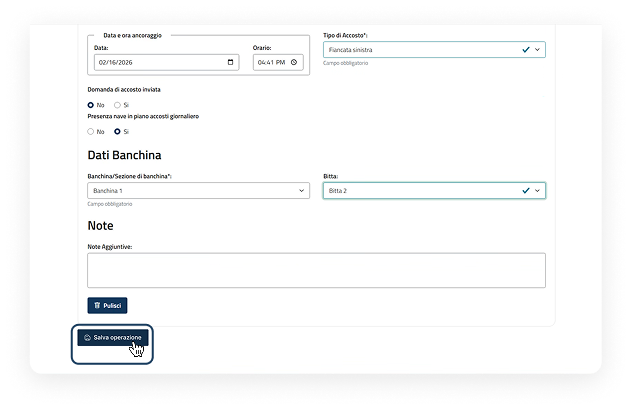
Finestra di conferma
Il sistema mostra una finestra di conferma della modifica. Cliccare il pulsante "Conferma" per proseguire.
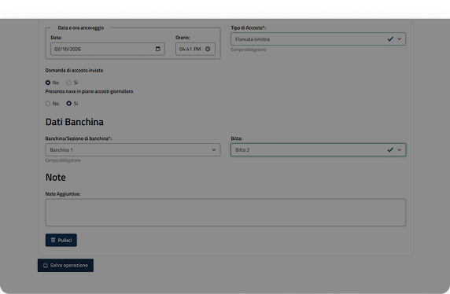
04.
Cancellazione operazioni
Panoramica sulla cancellazione di un'operazione.
Cancellazione operazioni
Passaggi per cancellare un'operazione
Dopo aver creato un operazione, l'utente può eliminarla tramite i seguenti passaggi:
Cancellazione tramite pagina di dettaglio
Nell'elenco risultati della ricerca delle soste è possibile eliminare lo sosta selezionandola attraverso la checkbox e successivamente cliccando il pulsante "Elimina".
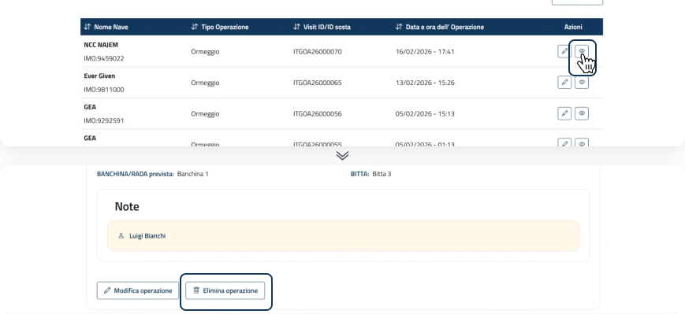
Finestra di conferma eliminazione e successo
Il sistema mostra una finestra in cui l'utente deve confermare di essere sicuro di voler eliminare l'operazione. Cliccare "Elimina operazione" per proseguire. Una volta eliminata, non sarà più possibile recuperarla.
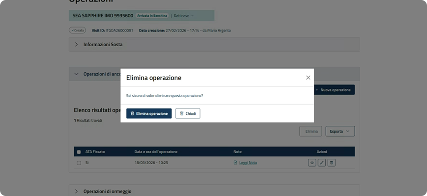